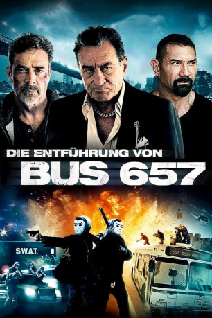

gesehen am 21.12.2015
gesehen am 21.12.2015Alternativ: Heist gesehen am 21.12.2015
 
 IMDB-Wertung: 6.1 / 10
IMDB-Wertung: 6.1 / 10  Metascore:
Metascore: 
Vaughn hat eine Tochter, die im Sterben liegt, und könnte dringend 300.000 Dollar gebrauchen für die rettende Operation. Gangsterboss Pope ist aber immer noch sauer, dass Vaughn einst bei ihm kündigte, und verweigert den Kredit. Daraufhin beschließt Vaughn, Popes Casino auszurauben. Dabei geht schief, was schief gehen kann, und Vaughn findet sich samt schießwütigem Partner mit dünnem Nervenkostüm wieder als Kidnapper eines Linienbusses, begleitet und gejagt von der lokalen Polizei und Popes Killern gleichermaßen. Ein Ex-Gangster bestiehlt seinen Ex-Boss und findet sich im Mittelpunkt einer turbulenten Verfolgungsjagd wieder. Robert De Niro gibt sich die Ehre als finsterer Unterweltzar in diesem spannenden B-Movie-Actionthriller.
Jahr: 2015
Dauer: 92 Minuten
FSK: 16
Land: USA Studio: Lionsgate PremiereTonspuren: DTS - ,
Untertitel: Deutsch,
Auflösung: 1080p (1920x800) Größe: 7618 MB
Genre: Action, Thriller, Krimi
Regisseur: Scott Mann
Drehbuch: Stephen C. Sepher, Stephen C. Sepher, Max Adams
Soundtrack: James Edward Barker, Tim Despic
Darsteller:
 Gina Carano als Kris
Gina Carano als Kris Jeffrey Dean Morgan als Vaughn
Jeffrey Dean Morgan als Vaughn Robert De Niro als The Pope
Robert De Niro als The Pope Dave Bautista als Cox
Dave Bautista als Cox Kate Bosworth als Sydney
Kate Bosworth als Sydney Morris Chestnut als Dog
Morris Chestnut als Dog D.B. Sweeney als Bernie
D.B. Sweeney als Bernie Lydia Hull als Pauline
Lydia Hull als Pauline Joshua Mikel als Grant
Joshua Mikel als Grant Tyler Jon Olson als Steve
Tyler Jon Olson als Steve Lance E. Nichols als Captain Michaels
Lance E. Nichols als Captain Michaels Ritchie Montgomery als Jono
Ritchie Montgomery als Jono Han Soto als Lin Tao
Han Soto als Lin Tao Christopher Rob Bowen als Eric
Christopher Rob Bowen als Eric Jamie Gliddon als Officer Ulmer
Jamie Gliddon als Officer Ulmer Patrick Constantine Bertagnolli Jr. als Officer Cazzuto
Patrick Constantine Bertagnolli Jr. als Officer Cazzuto Bennett Wayne Dean Sr. als Soup Kitchen Patron , uncredited
Bennett Wayne Dean Sr. als Soup Kitchen Patron , uncreditedDatei: X:\2015(A-F)\Bus 657 (2015, FSK16, 1920x800).mkv seit 13.11.2015
Festplatte: HD 2015(A-Z)
 Es gibt insgesamt 143 Filme in der Gruppe '2015(A-F)'
Es gibt insgesamt 143 Filme in der Gruppe '2015(A-F)'